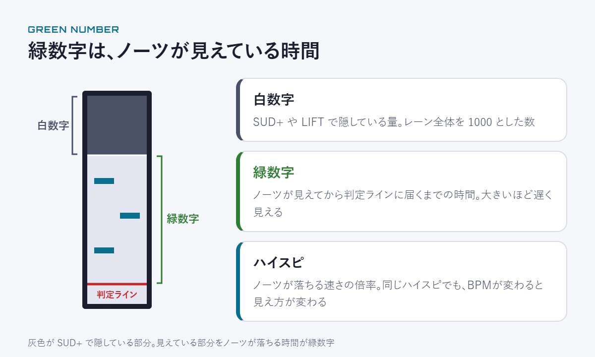
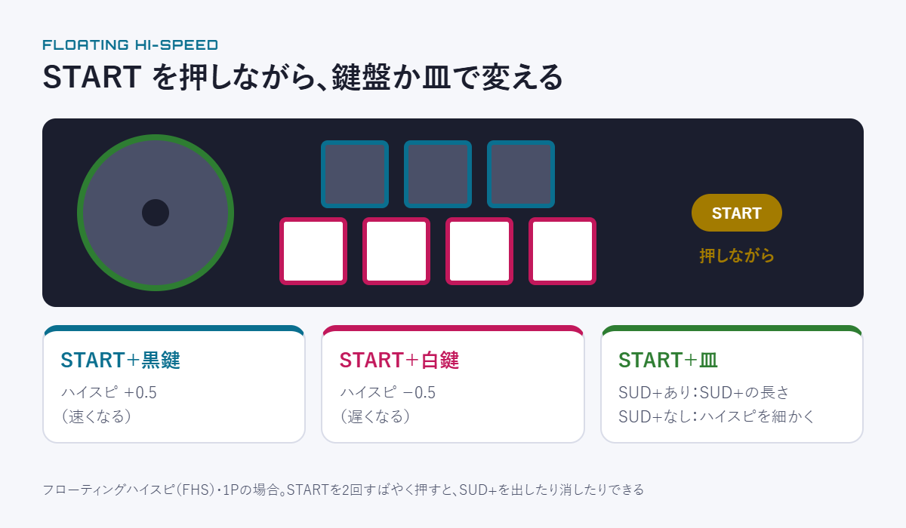
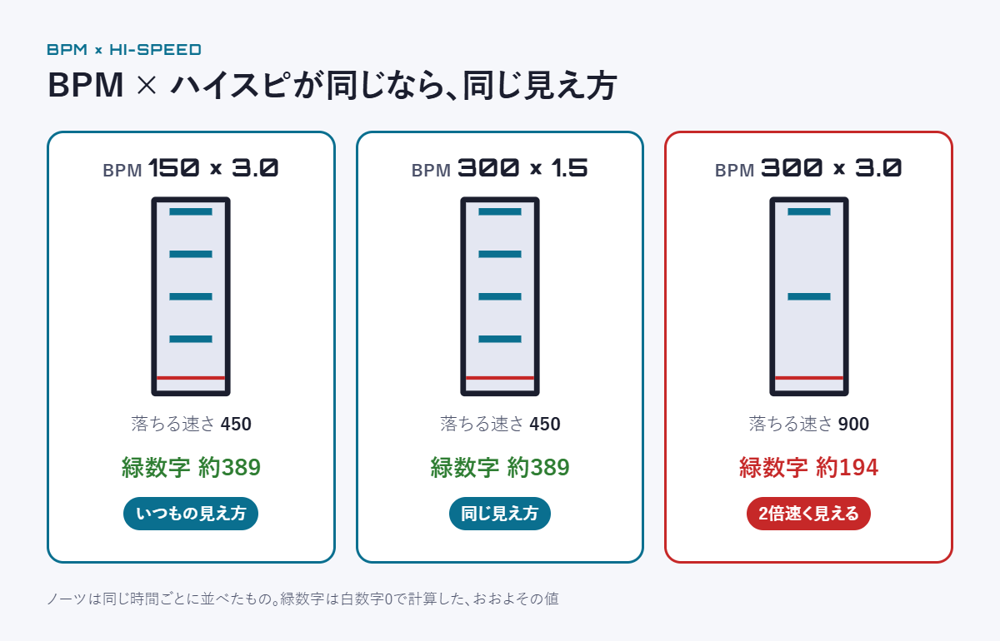
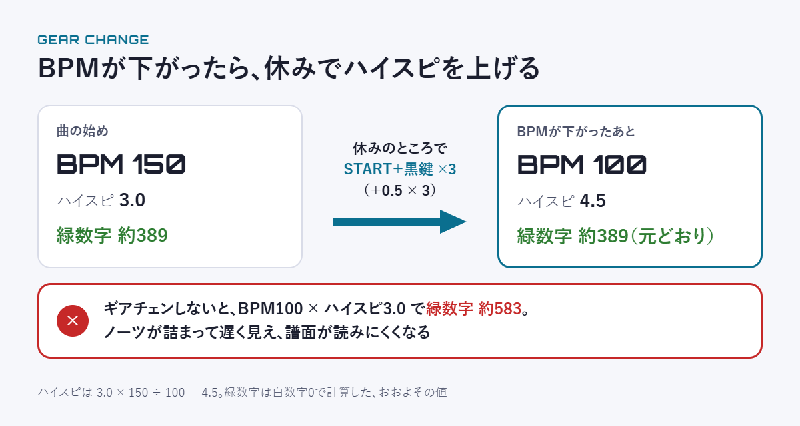

📑 文章目录（15 节）
本文将讲解 IIDX（beatmania IIDX / 弐寺）的倍速（Hi-Speed）种类与选用方式、倍速与绿数字的计算方法，以及在曲目中途调整倍速的变速调速（Gear Change）操作方法。
关于绿数字应该设成多少（各段位参考值及白数字的设定方法），已汇总在绿数字专题文章中，因此本文将聚焦于倍速的操作与计算。
- 基本做法是将倍速设为浮动倍速（FHS），并以绿数字（音符在屏幕上的可见时间）为基准来统一流速
- 绿数字与 BPM × 倍速成反比。BPM 变为 2 倍时，将倍速减半即可保持相同的视觉流速
- 变速调速（Gear Change）时，按住 START 键的同时配合按键（每次增减 0.5）或转盘（皿）进行操作。在 FHS 下，BPM 变化后轻轻拨动一下转盘即可自动恢复原本的绿数字
- 变速调速只需要用在 BPM 变化幅度大、直接影响能否通关的曲段即可
什么是倍速（Hi-Speed）
倍速（HI-SPEED）是用来改变音符下落速度的选项。提高倍速后，音符之间的纵向间距会拉大，下落速度也会变快。
不过，即使倍速数值相同，只要曲目的 BPM 不同，实际下落速度也会不同。因此，如今的主流做法并不是按固定的倍速数值来选，而是以绿数字（音符从轨道顶端出现到抵达判定线的可见时间）为准，让所有曲目始终保持一致的视觉流速。

倍速的 3 种类型
IIDX 的倍速共有以下 3 种模式：
| 模式 | 特点 | 适合人群 |
|---|---|---|
| 普通倍速 | 速度分为 20 档，各档位按绿数字划分 | 刚开始游玩的新手 |
| 浮动倍速（FHS） | 支持无级微调，非常容易将绿数字统一为相同值 | 绝大多数玩家 |
| 经典倍速（CHS） | 与早期版本相同，从固定倍率（1.00～4.00）中选择 | 习惯早期版本固定倍率的老玩家 |
推荐使用浮动倍速（FHS）
FHS 是能够将倍速精细调整到小数点后的模式。哪怕每首歌的 BPM 各不相同，也能让曲目开始时的绿数字始终保持一致。游玩中按住 START 打开倍速窗口，再按下 EFFECT（音效）键即可切换（在 Beginner Option 新手选项下无法使用）。
根据官方说明，推荐的流程是先用普通倍速找到自己看着舒服的速度，再切换到 FHS。
经典倍速（CHS）
CHS 是沿用早期作品方式的倍速调整模式。在 e-amusement 网站的游玩自定义（Play Customize）中，开启“使用经典倍速作为常规倍速（通常のハイスピードとしてクラシックハイスピードを使用する）”即可启用。倍率需从 1.00、1.50 以及 2.00 至 4.00 之间每 0.25 一档等固定数值中选择。
笔者坚定只用 FHS，原因有以下 3 点：
- 切换曲目时，开局的绿数字始终相同。无需每首歌重新手动对速度，随时都能以习惯的视觉流速游玩
- 易于搭配 SUD+（上遮罩）使用。用转盘调节 SUD+ 长度时绿数字不会改变，曲目中途也能自由调整遮罩范围
- CHS 的倍率步进是固定的，遇到某些 BPM 时无法精准对齐自己平时习惯的绿数字
除非是从早期版本一路玩过来、已经习惯固定倍率的玩家，否则直接选择 FHS 就完全没问题。
倍速的调节方法
在游玩过程中（包括乐曲开始前的等待时间），按住 START 键的同时进行以下操作：
| 操作 | 普通倍速 | FHS（开启 SUD+） | FHS（未开启 SUD+） |
|---|---|---|---|
| START ＋ 黑键 | 加快 1 档 | 倍速 ＋0.5 | 倍速 ＋0.5 |
| START ＋ 白键 | 减慢 1 档 | 倍速 −0.5 | 倍速 −0.5 |
| START ＋ 转盘 | — | 调整 SUD+ 长度（绿数字不变） | 精细微调倍速 |

开启 SUD+（上遮罩/挡板）并在 FHS 模式下拨动转盘，可以在保持绿数字不变的前提下，只改变 SUD+ 的遮挡长度。即使调整了可视区域大小，音符的可见时间依然恒定，非常方便。快速连按两下 START 键可以随时开启或隐藏 SUD+。
倍速与绿数字的计算
绿数字由 BPM、倍速以及白数字（SUD+ 与 LIFT 遮挡的总长度）共同决定。计算公式如下：
绿数字 ≒ 175,000 ×（1000 − 白数字）÷ 1000 ÷（BPM × 倍速）
计算示例
以 BPM 150、倍速 2.5、白数字 300 为例：
- 175,000 × 700 ÷ 1000 ＝ 122,500
- BPM × 倍速 ＝ 150 × 2.5 ＝ 375
- 122,500 ÷ 375 ≒ 327（即为绿数字的近似值）
务必记住的 3 条关系
其实并不需要死记上面的公式，只要理解下面这 3 点，变速调速（Gear Change）时就足够用了：
- BPM 翻倍时，绿数字减半（音符看起来快了一倍）
- 想要保持相同的绿数字，需将倍速按 BPM 变化比例的反比调整。例如 BPM 从 150 变为 300，倍速就要减半
- 增大白数字（增加遮挡范围）后，即使倍速数值不变，绿数字也会变小

举例来说，如果当前以倍速 3.0 游玩 BPM 150 的曲子，曲中 BPM 降到了 100，想维持相同的视觉流速就需要把倍速调整为 3.0 × 150 ÷ 100 ＝ 4.5。在 FHS 模式下，只需按 3 次 START ＋ 黑键（0.5 × 3）就刚好对上了。
什么是变速调速（Gear Change）
变速调速（Gear Change），指的是在曲目演奏中途手动更改倍速的操作。在曲中会发生 BPM 变化的变速曲（Soflan）里，当流速突然变慢或变快时，可以通过变速调速让谱面尽量恢复到平时习惯的流速。
变速调速的步骤
- 查明 BPM 变化的位置
先在 textage.cc 等谱面网站上查看谱面，确认在第几小节 BPM 会变成多少，同时留意前后是否有没有音符的空拍休息段。
- 确定需要调整的幅度
根据 BPM 的比例算出倍速需要增减多少。由于 FHS 下按键盘每次增减 0.5，提前算好需要按几下。
- 在没有音符的间隙进行切换
按住 START 键的同时用键盘或转盘调整倍速。因为需要腾出一只手按 START，所以要选在音符稀疏处或空拍段进行操作。

FHS 的“轻拨转盘（皿チョン）”
在 FHS 模式下，当曲中 BPM 发生变化时，倍速数值本身保持不变，只有绿数字会随之改变。此时只要按住 START 键并轻轻拨动一下转盘（皿チョン），系统就会自动重新计算倍速，使绿数字瞬间恢复为曲目开始时的初始值。
这种操作不用自己心算就能恢复原有流速，因此在低速段想把速度拉回正常时非常方便。不过要注意，如果开启了 SUD+，START ＋ 转盘会变成调整 SUD+ 长度的操作（见上表），操作时需留心不要把白数字给弄乱了。笔者平时会根据具体曲目，灵活选择用“轻拨转盘”还是用键盘按键来调速。
变速调速需要练到什么程度？
变速调速需要一定熟练度，一旦操作失误，谱面反而会变得更难读。因此，只在 BPM 变化极大、不调速就无法通关的曲目中使用就足够了。如果只是小幅度的变速，直接硬扛打过去反而更稳。
推荐的倍速设定方式
倍速数值本身会随每首曲子的 BPM 改变，因此并不存在所谓的“推荐倍速值”。真正需要定下来的是绿数字。确定好自己的基准绿数字之后，用 FHS 让每一首歌都对齐到这个绿数字即可。
关于各段位的绿数字参考值以及白数字（SUD+ / LIFT）的决定方法，请参考绿数字专题文章。另外，更改倍速后，你对判定偏移的体感也可能会随之变化。如果发现 FAST / SLOW 出现明显偏向，记得顺便重新检查一下判定时机调整。
关于倍速的常见问题
倍速设成多少比较推荐？
倍速数值会随曲目 BPM 而改变，因此真正要定的是绿数字。建议使用浮动倍速（FHS），让每首歌都统一在相同的绿数字下。
浮动倍速（FHS）和经典倍速（CHS）选哪个好？
绝大多数玩家选浮动倍速（FHS）就足够了，因为更容易把每首歌的绿数字统一起来。经典倍速（CHS）只适合从早期版本一路玩过来、已经习惯固定倍率的老玩家。
请问倍速该怎么计算？
想要保持相同的视觉流速，只需将倍速按 BPM 比例的反比来调整即可。比如 BPM 从 150 升到 300，倍速大致减半即可。绿数字则可近似用公式“175,000 ×（1000 − 白数字）÷ 1000 ÷（BPM × 倍速）”估算。
有必要专门练习变速调速（Gear Change）吗？
在想通关大幅变速曲的时候确实很有帮助，但并非每首歌都需要。建议先优先把日常的绿数字稳固下来，等遇到真正需要的曲目时再针对性练习即可。
总结
倍速的基本用法是开启浮动倍速（FHS），并统一以绿数字为基准进行调节。由于绿数字与 BPM × 倍速成反比，遇到 BPM 变化时，只要将倍速按反比调整就能保持相同的视觉流速。变速调速（Gear Change）通过按住 START 配合按键或转盘完成，只需在 BPM 变化剧烈的曲目中使用即可。
关于如何确定适合自己的绿数字，请参阅绿数字专题文章。